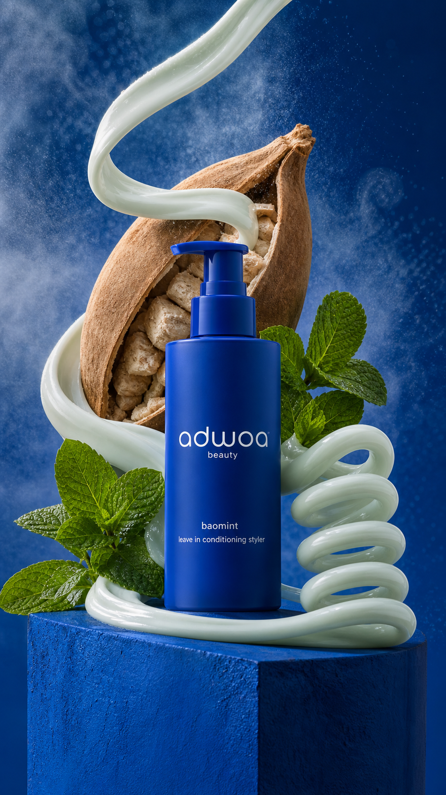

Concept created by LoomixUnsolicited concept
adwoa beautyReels + TikTok9:168 seconds
baomint — Cool Into Curl
The ingredient system becomes a texture transition: pale mint cream wraps a baobab pod, catches a cool mist, and tightens into one elastic spiral beside the cobalt bottle.
Create the full adOpen product pageAI-generated visual direction

Concept art for discussion only. Product and brand belong to adwoa beauty.
Hooks
Cool cream. Springy curve.Baobab meets mint in motion.Let the ribbon find its curl.
Six-shot storyboard
- Open on a sculptural baobab pod.
- Introduce fresh mint with a cool mist.
- Dispense one pale conditioning ribbon.
- Wrap it around the hero ingredients.
- Tighten the ribbon into an elastic spiral.
- End on cobalt pack, hook, and CTA.
Caption
An ingredient-led texture story that finishes in one satisfying curl.
LoomixLoomix turns one product photo into a storyboard, short video, captions, and ready-to-post ad copy.